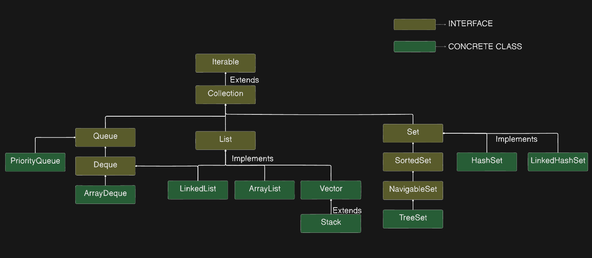
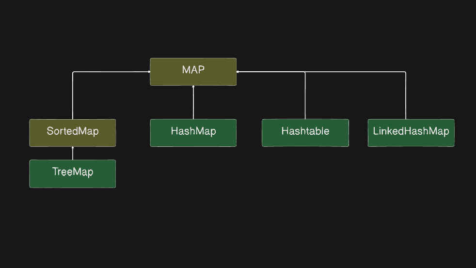

Java Interview Questions
Collection framework Hierarchy in Java
package java.util;
classDiagram
class Iterable {
<<interface>>
}
class Collection {
<<interface>>
}
class List {
<<interface>>
}
class Queue {
<<interface>>
}
class Set {
<<interface>>
}
class ArrayList {
<<class>>
}
class LinkedList {
<<class>>
}
class Vector {
<<class>>
}
class Stack {
<<class>>
}
class AbstractQueue {
<<abstract_class>>
}
class PriorityQueue {
<<class>>
}
class Deque {
<<interface>>
}
class ArrayDeque {
<<class>>
}
class AbstractSet {
<<abstract_class>>
}
class HashSet {
<<class>>
}
class LinkedHashSet {
<<class>>
}
class SortedSet {
<<interface>>
}
class TreeSet {
<<class>>
}
class Map {
<<interface>>
}
class AbstractMap {
<<abstract_class>>
}
class Hashtable {
<<class>>
}
class HashMap {
<<class>>
}
class LinkedHashMap {
<<class>>
}
class SequenceMap {
<<interface>>
}
class SortedMap {
<<interface>>
}
class NavigableMap {
<<interface>>
}
class TreeMap {
<<class>>
}
Iterable <|.. Collection
Collection <|.. List
Collection <|.. Queue
Collection <|.. Set
List <|-- Vector
Vector <|.. Stack
List <|-- ArrayList
List <|-- LinkedList
Queue <|.. Deque
Deque <|-- LinkedList
Deque <|-- ArrayDeque
Queue <|-- AbstractQueue
AbstractQueue <|.. PriorityQueue
Set <|-- HashSet
Set <|-- AbstractSet
Set <|.. SortedSet
AbstractSet <|.. HashSet
HashSet <|.. LinkedHashSet
AbstractSet <|.. TreeSet
Map <|-- Hashtable
Map <|-- HashMap
Map <|-- AbstractMap
Map <|.. SequenceMap
HashMap <|.. LinkedHashMap
AbstractMap <|.. HashMap
SequenceMap <|.. SortedMap
SortedMap <|.. NavigableMap
NavigableMap <|-- TreeMap
AbstractMap <|.. TreeMap
Simplified Structure


Question 1: What is the difference between HashMap and ConcurrentHashMap in Java ?
HashMap
- Not Synchronized:
HashMapis not thread-safe, which means that if multiple threads access it concurrently and at least one of the threads modifies the map structurally, it must be synchronized externally. - Null Values:
HashMapallows one null key and multiple null values. - Performance: Because it's unsynchronized,
HashMapoffers better performance in environments where thread safety is not a concern. - Iterators: The iterators returned by
HashMapare fail-fast, which means they throw aConcurrentModificationExceptionif the map is structurally modified after the iterator is created, except through the iterator's ownremovemethod.
ConcurrentHashMap
- Thread Safety:
ConcurrentHashMapis thread-safe and provides concurrency support by segmenting the map into different parts and locking only a portion of the map during updates. This allows concurrent reads and writes to the map, increasing performance in multi-threaded environments. - No Null Values:
ConcurrentHashMapdoes not allow null keys or null values. Attempting to store a null key or value will throw aNullPointerException. - Performance: While
ConcurrentHashMapis slower thanHashMapdue to its thread-safe nature, it is faster than aHashtableor a synchronizedHashMap(synchronized externally withCollections.synchronizedMap) under high concurrency. - Iterators: The iterators returned by
ConcurrentHashMapare weakly consistent, which means they reflect the state of the map at some point at or since the creation of the iterator. They do not throwConcurrentModificationExceptionbut are designed to be used by concurrent threads. - Concurrent Operations:
ConcurrentHashMapincludes additional methods to support concurrent operations, likeputIfAbsent,remove, andreplace, which perform atomic check-and-act operations.
In summary, HashMap should be used in non-threaded or single-threaded environments, or when the map does not require concurrent access/modification. ConcurrentHashMap is the preferable choice in multi-threaded applications where the map is accessed by concurrent threads and high performance is required.
Question 2: What will be the difference with ConcurrentHashmap when we make the HashMap synchronized ?
Answer :
Making a HashMap synchronized typically means wrapping it using Collections.synchronizedMap(). This provides a basic level of thread safety by ensuring that each individual operation on the HashMap is synchronized. However, there are still significant differences between a synchronized HashMap and a ConcurrentHashMap:
Synchronized HashMap
- Method-Level Synchronization: Every method call on the
HashMapis synchronized, so only one thread can access the map at a time for any operation. - Single Lock: There is a single lock for the entire map, which can lead to contention when many threads are accessing the map concurrently.
- Iterator Safety: The iterators for the synchronized
HashMapare not thread-safe. If one thread is iterating over the map while another thread modifies it, aConcurrentModificationExceptionmay be thrown. External synchronization is needed during iteration to avoid this exception. - Concurrent Access: Multiple readers or a writer and a reader cannot access the map at the same time. This can be a significant performance bottleneck.
ConcurrentHashMap
- Segment-Level Locking:
ConcurrentHashMapuses multiple locks on segments of the map, allowing concurrent access to different segments and only locking a segment during writes. This minimizes contention and improves performance. - Lock Stripping:
ConcurrentHashMapemploys a technique called lock stripping, which uses a finer-grained locking mechanism for higher concurrency. - Iterator Safety: Iterators in
ConcurrentHashMapare weakly consistent and do not throwConcurrentModificationException, allowing non-blocking reads and updates to the map during iteration. - Enhanced Concurrent Access: Multiple readers can access the map concurrently without locking, and writers can add or update without blocking readers. This allows higher levels of concurrency.
In short, while you can make a HashMap thread-safe by synchronizing it, ConcurrentHashMap is designed for higher throughput in concurrent scenarios and can handle multiple readers and writers efficiently. Synchronized HashMap is a more conservative approach where every operation is thread-safe but potentially slower under high concurrency due to the coarse-grained lock mechanism.
Question 3: Difference Between Volatile, Atomic And Synchronized in Java
Question 4: Transient Keyword in Java
Question 5: strictfp Keyword in Java
Question 6: HasMap vs Hashtable
Question 7: Semaphores in Java
Question 8: final, finally{} vs finalize(): finalize is depricated since Java 9
final: Restrict the modification
variable: cannot modify its value
method: cannot be override
class: cannot be extended
finally{} : Block of code written generally after try catch block which will be executed always no matter what
finalize(): part of object class, invoked by GC just before garbage collection for some clean up activity
finalize is depricated since Java 9
Question 9: Why Map is not under Collections?
- All Collection Classes have
Valueparameter and the methods are designed to provide implementation aroundValue. - While
MaphasKey-valueparameter
Question 9: HashMap internal implementation?
Hash functions: eg: MD1, SH256, Custom hashcode implementation
Node:
- hash
- key
- value
- next Node
Default initial capacity :
- 1>>4 i.e. 16
Map Internally Stores data:
Hash Collision
- put(5, "abc") -> 61610
- get(5) -> hash() -> 61610 % 16(capacity) -> gives index -> iterate over list to find key
5 - i.e. compares
hashandvalue
Contract b/w Hashcode and equals method
- if obj1 == obj2 their hash should be also same
- if 2 objects hash is same, doesn't mean objects are same.
Load Factor:
Default = 0.75-> 16 * 0.75 = 12- increases or doubles the size of hashmap when load factor is reached, HashMap does rehash
Treefy Threshold = 8 (it is also called Bin count)
- Converts the LinkedList O(n) into Tree, its a Balanced Binary Search tree(Red -Black tree),
- Searching would be in O(log(n))
TIme Complexity
Add: Amortized O(1) i.e averageRemove: Amortized O(1)Get: amortized O(1)